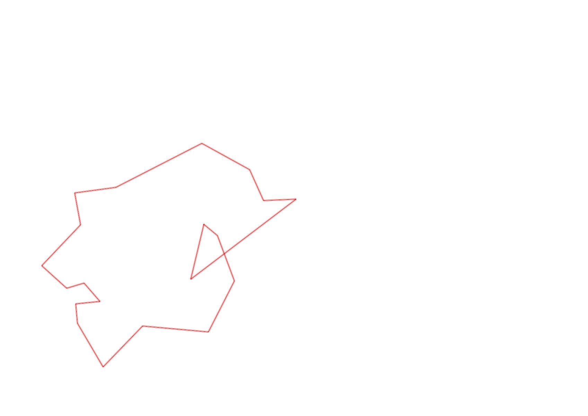
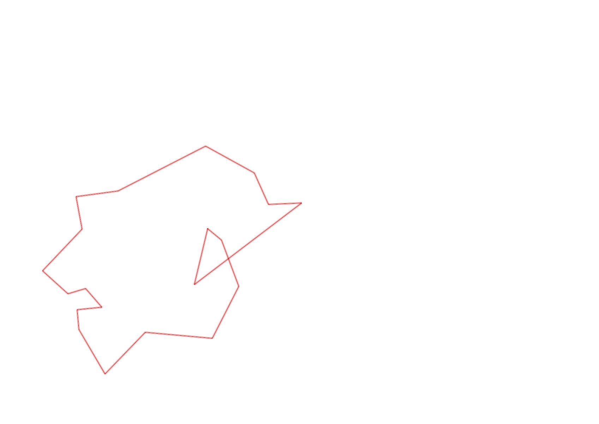

| Control |
Points |
Time Punched |
Distance |
Your Time |
Pace |
Place |
Fastest Time |
Median Time |
% Behind Fastest |
| 127 |
20 |
|
0.06 |
0:00:12 |
03:20 |
9 / 30 |
0:00:01 |
0:00:32 |
1100% |
| 42 |
40 |
|
0.17 |
0:01:51 |
10:52 |
10 / 20 |
0:01:06 |
0:01:52 |
68% |
| 61 |
60 |
|
0.21 |
0:03:18 |
15:42 |
7 / 20 |
0:02:20 |
0:03:34 |
41% |
| 59 |
50 |
|
0.24 |
0:03:19 |
13:49 |
16 / 19 |
0:01:47 |
0:02:30 |
85% |
| 77 |
70 |
|
0.21 |
0:02:41 |
12:46 |
12 / 17 |
0:01:25 |
0:02:33 |
89% |
| 40 |
40 |
|
0.18 |
0:02:37 |
14:32 |
8 / 18 |
0:01:16 |
0:02:38 |
106% |
| 71 |
70 |
|
0.07 |
0:01:05 |
15:28 |
7 / 12 |
0:00:34 |
0:01:00 |
91% |
| 41 |
40 |
|
0.09 |
0:01:46 |
19:37 |
6 / 8 |
0:00:47 |
0:01:39 |
125% |
| 54 |
50 |
|
0.09 |
0:01:27 |
16:06 |
4 / 8 |
0:00:57 |
0:01:28 |
52% |
| 69 |
60 |
|
0.07 |
0:04:53 |
1:09:45 |
18 / 20 |
0:01:00 |
0:01:56 |
388% |
| 53 |
50 |
|
0.12 |
0:01:53 |
15:41 |
16 / 26 |
0:01:16 |
0:01:51 |
48% |
| 44 |
40 |
|
0.2 |
0:02:13 |
11:05 |
18 / 22 |
0:00:39 |
0:01:40 |
241% |
| 32 |
30 |
|
0.12 |
0:03:26 |
28:36 |
22 / 22 |
0:00:43 |
0:01:19 |
379% |
| 63 |
60 |
|
0.15 |
0:01:25 |
09:26 |
10 / 25 |
0:01:05 |
0:01:29 |
30% |
| 107 |
100 |
|
0.35 |
0:03:01 |
08:37 |
5 / 22 |
0:02:14 |
0:03:49 |
35% |
| 57 |
50 |
|
0.2 |
0:05:09 |
25:45 |
17 / 22 |
0:01:54 |
0:03:53 |
171% |
| 92 |
90 |
|
0.12 |
0:05:22 |
44:43 |
12 / 18 |
0:02:10 |
0:04:22 |
147% |
| 47 |
40 |
|
0.12 |
0:04:11 |
34:51 |
6 / 16 |
0:01:07 |
0:04:40 |
274% |
| 38 |
30 |
|
0.48 |
0:07:13 |
15:02 |
2 / 2 |
0:05:01 |
0:06:07 |
43% |
| Finish |
0 |
|
0.2 |
0:01:42 |
08:30 |
6 / 10 |
-1 day, 23:07:29 |
0:01:37 |
-99% |
Total Distance Covered: 3.45km
Points Scored: 990
Late Penalty: 0
Final Score: 990
Total Time: 0hours 58minutes 44seconds
Efficiency: 286.96 points/km
 
